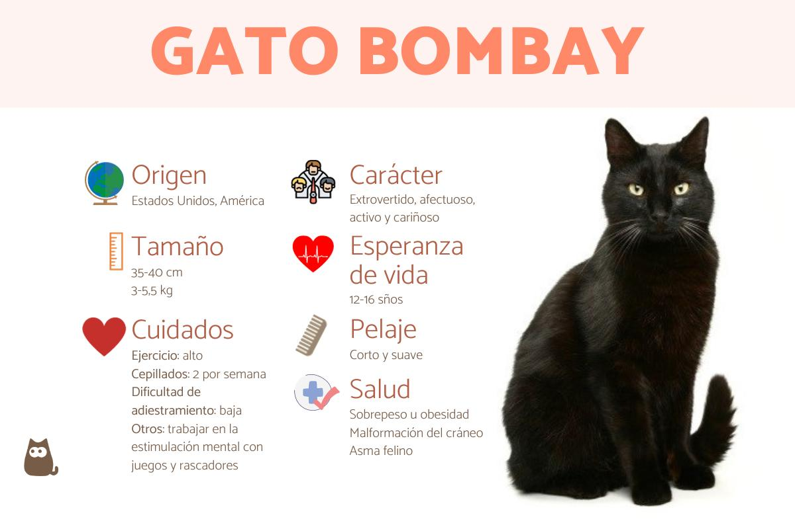

Se remonta al año 1950, en Louisville, Kentuky (EE.UU), gracias a la criadora Nikki Horner. A partir del 1953, Horner empieza la cría selectiva de gatos bombay partiendo de un gato americano de pelo corto y negro junto a una gata burmés de manto cibelino. A diferencia de algunas razas que pueden tener ancestros salvajes, el gato bombay no tiene ascendencia salvaje y ha sido creado exclusivamente a través de la selección cuidadosa de estos dos linajes específicos, por lo tanto, es una raza híbrida. Tardó un tiempo en fijar correctamente el estándar de la raza, pero finalmente en 1976 se creó el gato bombay.
Tamaño mediano: normalmente, los gatos bombay suelen pesar alrededor de 3 a 5,5 kg. En cuanto a los centímetros, suelen medir de 45 a 50 cm de largo y de 25 a 30 cm de alto. Además, su cola también tiene un tamaño medio.
Cara redondeada: coronada con un hocico realmente corto, es decir, la distancia entre la nariz y la frente es poca.
Almohadillas negras: una características de los gatos bombay realmente inconfundible son sus almohadillas completamente negras.
Orejas redondeadas: son pequeñas y acaban redondeadas en la punta.
Ojos grandes y redondos: como la mayoría de sus rasgos, los ojos del gato bombay no podían ser de otra forma que no fuera redonda. Siempre son de color cobre, aunque en ocasiones pueden ser dorados. Eso sí, siempre serán muy brillantes.

El color del manto del gato bombay es negro azabache (desde las raíces hasta la punta), corto, liso y extremadamente brillante. Puede parecer satinado

Suele ser una raza de gato muy sociable y cariñosa, ya que disfruta enormemente de la compañía de sus familiares y detesta profundamente la soledad. En algunos casos, si pasa demasiado tiempo solo, el gato bombay puede llegar a sufrir ansiedad por separación, una condición psicológica que puede afectar a su bienestar. Le encanta maullar para comunicar su estado de ánimo o para pedirnos alguna cosa, siempre con un tono de voz agradable y dulce.

Alimentación: será importante reparar también en la alimentación del gato bombay, que debe ser siempre de alta calidad, de no ser así, empezaremos a observar su pelaje empobrecido. Para ello podemos buscar productos comerciales, como el pienso, pero también podemos elaborar nuestras propias recetas caseras. Al margen de la propia comida, también podemos ofrecerle diariamente pequeñas porciones de comida húmeda casera, algo que le entusiasmará y le ayudará a estar más hidratado.
Higiene: no requiere grandes cuidados, pues al poseer un manto corto, no tiene tendencia a sufrir enredos y acumulación de suciedad. Bastará con dos cepillados semanales, que le ayudarán a retirar el pelo muerto y a mantener el pelaje lustroso y brillante que le caracteriza. Recuerda que los gatos se limpian a sí mismos, por lo que no será necesario bañarle. Además, el baño hace que pierdan la capa de protección natural de su piel, evítalo siempre que te sea posible. No obstante, en algunos casos, principalmente si nuestro gato bombay está excesivamente sucio o tiene algo pegado en su pelaje, podemos bañarle, pero siempre es recomendable utilizar champús de lavado en seco o toallas y toallitas húmedas. Para un mayor brillo en su pelaje, puedes utilizar también acondicionadores de lavado en seco. No olvides que de forma regular debemos prestar atención a que sus orejas estén limpias, a observar que se lima las uñas de forma natural (de no ser así es conveniente recortarlas nosotros mismos) y la limpieza de los dientes.
Ejercicio: dependiendo de la edad y el estado de salud en el que se encuentre nuestro gato bombay, tendremos que adaptar la cantidad de ejercicio de esta raza de gato. Los gatos bombay son muy dormilones y cariñosos, por lo que no se caracterizan por ser altamente activos. Así, seremos nosotros los que nos encargaremos de ejercitarlos con juegos en casa, ya sean físicos o mentales. El enriquecimiento ambiental del hogar ayudará a que el animal encuentre plataformas en distintas alturas y pequeños retos en casa que lo mantendrán activo y sano. Además, también le permitirá mantener su salud mental y no estresarse.

Disfruta de una salud excelente, pues se trata de una de las razas menos propensas a sufrir enfermedades y por ello una de las más longevas. Al margen de esto, algunos gatos bombay pueden llegar a sufrir:
Malformación del cráneo: un problema de salud heredado de sus antecesores, los gatos burmeses.
Obesidad y sobrepeso: debido a su naturaleza poco activa y el pasar muchas horas durmiendo y descansando.
Asma felino y otras enfermedades respiratorias.
Para prevenir cualquier problema de salud será básico seguir el calendario de vacunación del gato y la desparasitación externa e interna, especialmente si le permitimos salir al exterior. Finalmente te recomendamos visitar al especialista cada 6 o 12 meses, de esta forma nos aseguraremos de su buen estado de salud.

Es de entre 12-16 años. Como siempre remarcamos en ExpertoAnimal, el hecho de que un gato viva más o menos va a depender sobre todo de su estado de salud previo. Además, también tiene mucho peso el tipo de vida que haya tenido: si ha sido un gato callejero o de hogar, si ha pasado hambre en alguna etapa de su ciclo de vida, si ha sufrido otras enfermedades o si no ha recibido los cuidados básicos que reciben los gatitos.